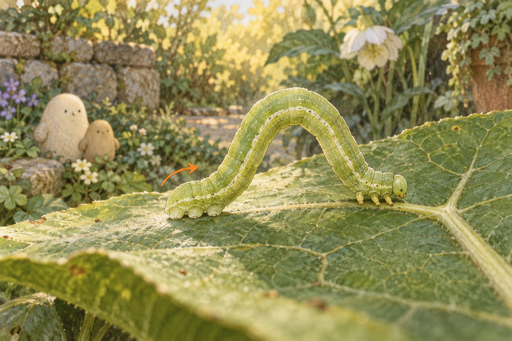

LOOK CLOSELY · 01
Why does the middle rise into a loop?
Find the head at the right. Follow the body back to the rear feet. Where is there empty space underneath?
A little explanation & something to try
The front legs hold the leaf while the rear comes closer. The long middle bends upward into a loop. Inchworms have jointed legs near the head and fleshy gripping parts called prolegs near the rear, with a long gap between. They do not walk on a row of legs along that middle.
Try this. Draw a long curved line with its two ends close together. Imagine the front end stays in one place as the rear comes closer. Which part must bend?